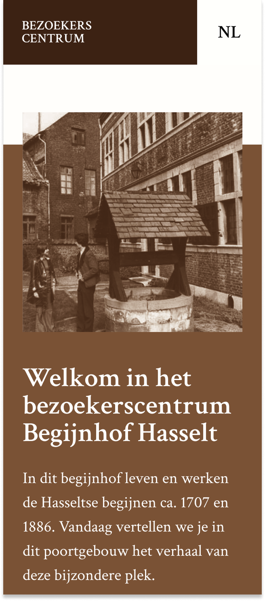
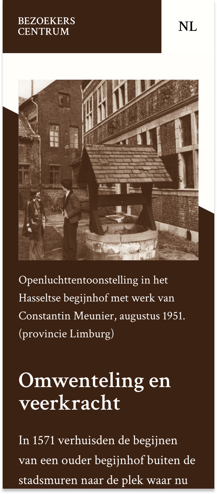
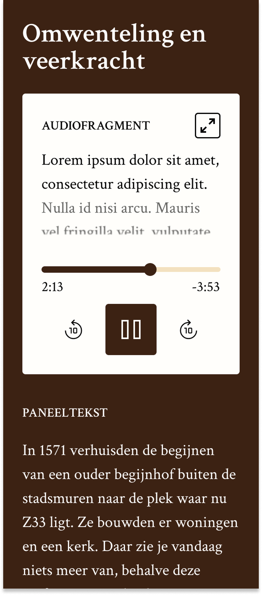

Begijnhof Hasselt
A heritage website concept for Begijnhof Hasselt, built around QR-driven content, multilingual pages, and a close link between the physical scenography and the digital experience.
Begijnhof Hasselt is designed as a content-rich heritage platform. The idea is that every piece of information that is physically available on site should also be easy to find online. Visitors scan a QR code, land on a dedicated page, and immediately get the right story in the right format.
The structure is built around the physical route through the building. That means the website is not just a collection of pages, but a guided experience that follows the same logic as the banners, panels, audio fragments, and video fragment on location. The layout also needs to support NL, EN, FR, and DE, because multilingual access is essential for the project.



The visual direction follows the scenography of Begijnhof Hasselt. Banner pages use a rectangular structure because the physical banners are rectangular, while the panel pages use angled compositions to echo the triangular panels on site. This helps each page family feel connected to the real experience without making the interface feel busy.
The audio pages are also designed to be accessible, with transcript-style text for visitors who prefer reading or need support.
The result is a mobile-first heritage website that stays calm and easy to navigate, even though the content is extensive. By grouping the content per location and media type, the experience stays intuitive for visitors while still leaving room for detailed storytelling, service information, and practical pages such as privacy, cookies, and terms.
Back to projects overview
Back
Next
Ecopick